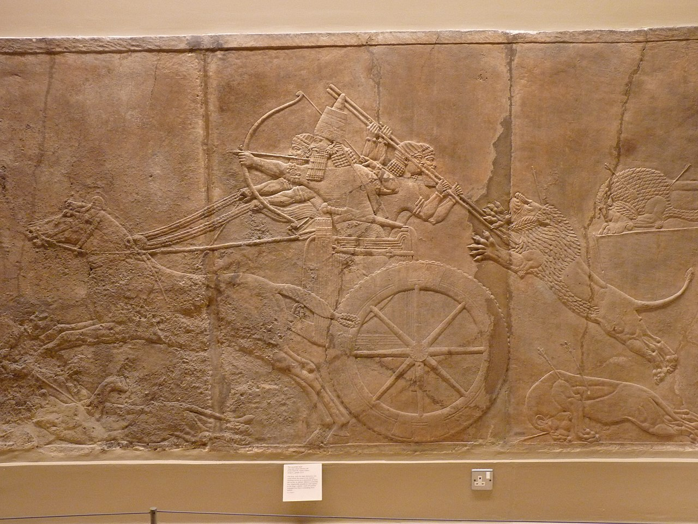
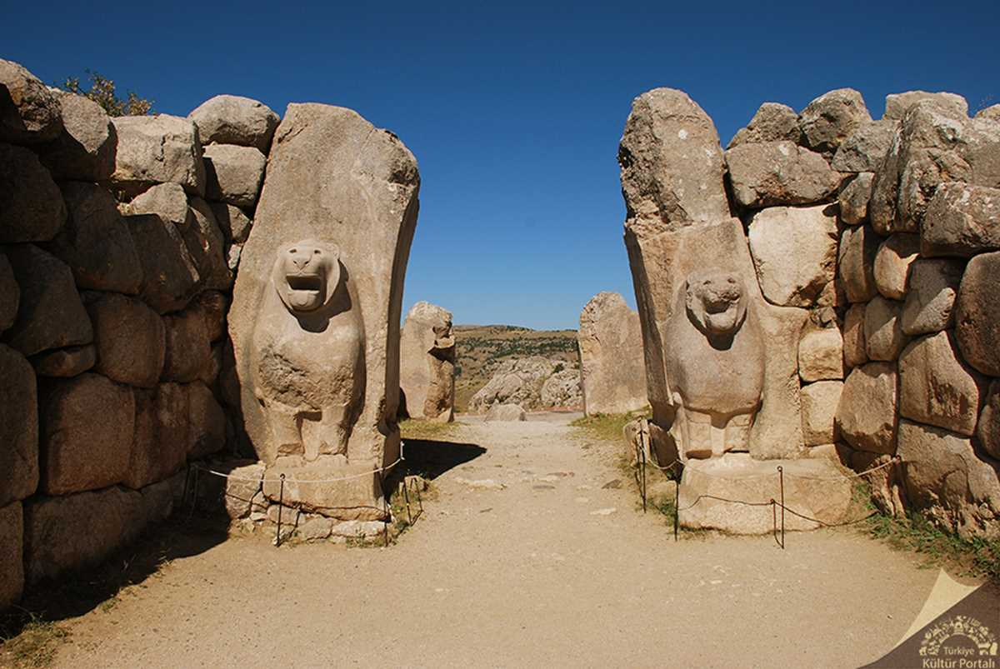
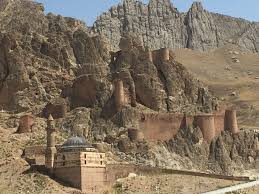
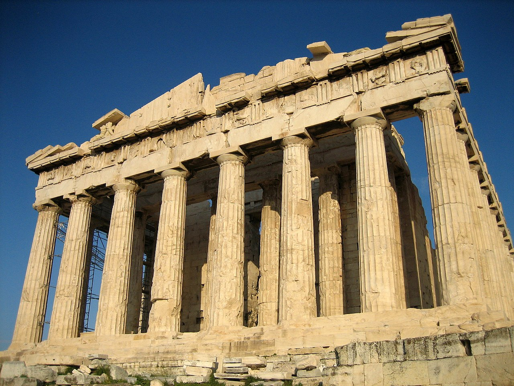
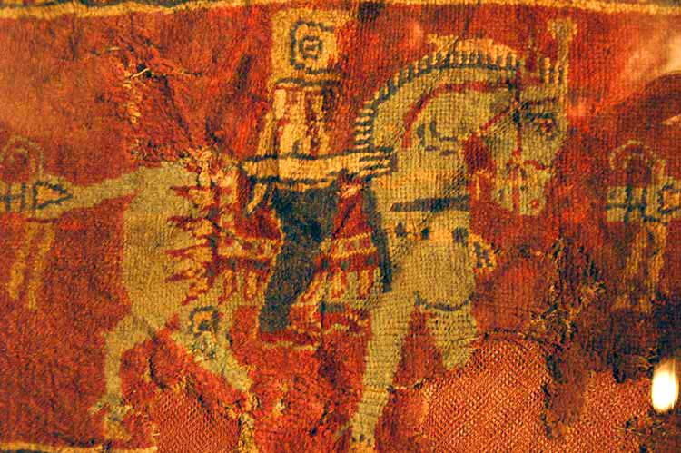

Mısır
İnanç: Ölümden sonraki yaşama inanırlardı. Firavunlar tanrı-kral kabul edilirdi.
Bilim ve Sanat: Matematik, tıp ve mühendislikte ileriydiler. Piramitler önemli mimari eserlerdir.

Asur, Hitit, Mısır, Urartu, Yunan ve Hun Medeniyetleri
İnanç: Çok tanrılı dinler yaygındı. Tanrılar savaş ve doğa olaylarıyla ilişkilendirilirdi.
Bilim ve Sanat: Astronomi ve yazılı hukuk gelişmişti. Kabartma sanatı ön plandaydı.
İnanç: Çok tanrılı dine sahiptiler. "Bin Tanrılı Halk" olarak anıldılar.
Bilim ve Sanat: Yazılı belgeler ve hukuk sistemleri gelişmişti. Mimarlıkta taş işçiliği dikkat çeker.
İnanç: Ölümden sonraki yaşama inanırlardı. Firavunlar tanrı-kral kabul edilirdi.
Bilim ve Sanat: Matematik, tıp ve mühendislikte ileriydiler. Piramitler önemli mimari eserlerdir.
İnanç: Tanrılar adına tapınaklar ve sunaklar inşa ettiler. Baş tanrıları Haldi idi.
Bilim ve Sanat: Sulama kanalları ve kaleler inşa ettiler. Madencilik ve taş işçiliği gelişmişti.
İnanç: Mitolojik tanrılara inanılırdı. Tanrılar insan gibi düşünülürdü.
Bilim ve Sanat: Felsefe, matematik, astronomi ve tıpta ilerlediler. Heykel ve tiyatro öne çıkmıştır.
İnanç: Gök Tanrı inancı hâkimdi. Doğa ve atalar kültü önem taşırdı.
Bilim ve Sanat: Yazılı kaynak azdır, ancak savaş teknolojileri ve göçebe sanatları gelişmişti.
Asur ve Hititler yazılı hukuk geliştirmiştir. Mısır ve Yunan bilimde ileriyken, Urartu mühendislikte, Hunlar ise savaş teknolojilerinde öne çıkmıştır. İnanç açısından hepsi çok tanrılı sistemlere sahip olsa da Hunlar ve Türk toplulukları tek tanrılı Gök Tanrı inancıyla ayrılır.